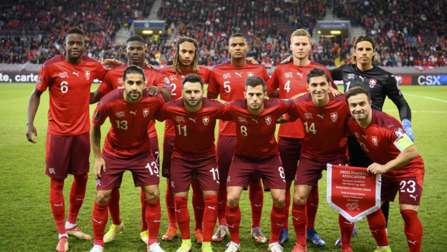

A Suíça participou de sua 11ª edição da Copa do Mundo de futebol em 2018. As melhores participações da Suíça foram nas Copas do Mundo de 1934, 1938 e 1954 quando a seleção suíça chegou às quartas-de-final. Em 2022 Fará sua 12° participação que será no Qatar.
Não obteve títulos em Copa do Mundo.
| Data/Hora | Estádio | Adversário |
|---|---|---|
| 24 nov 2022 / 07h00 | Estádio Al Janoub | Camarões |
| 28 nov 2022 / 13h00 | Estádio 974 (Estádio Ras Abu Aboud) | Brasil |
| 2 dez 2022 / 16h00 | Estádio 974 (Estádio Ras Abu Aboud) | Suíça |